Creating Firebase Realtime Web Dashboard
Build AuraIoT — a Firebase-powered dashboard for live environmental monitoring, relay control, authentication, automation, and telemetry export.
1. Overview
AuraIoT is a production-grade, responsive IoT cloud monitoring and control dashboard built on Google Firebase. Designed to bridge physical edge devices with modern web interfaces, the platform captures live sensor streams from the ESP32, visualizes ambient conditions in real time, and allows bidirectional appliance actuation.
The dashboard integrates live DHT11 temperature and humidity logging, LDR ambient-light sensing, manual and autonomous relay switching modes, secure Firebase Authentication for access control, persistent telemetry table recording, and instant CSV export for offline data analysis. The application is deployed on high-availability Firebase Hosting at dashboard-e6cea.web.app/automation.
2. Objective
The primary objective of this assignment is to build a cloud-connected IoT dashboard on Google Firebase that lets a user sign in, view live sensor readings, monitor the state of a connected device, and control the bulb relay from any web browser — without running a custom server.
- Create a Firebase project (
dashboard-e6cea) and enable Firebase Authentication, Realtime Database and Hosting. - Authenticate users with the Email/Password and Google providers before the dashboard is used.
- Display live DHT11 temperature, humidity and LDR light readings read from Firebase Realtime Database.
- Control the bulb relay with ON / OFF buttons that write to
home/bulb/state, and provide Manual / Automatic modes with an LDR threshold. - Show history and export it through charts, a historical telemetry table and a CSV export button.
- Deploy the dashboard on Firebase Hosting and document the setup honestly, including what still needs confirmation.
3. Problem Statement
Sensor nodes such as the ESP32 are small and are usually installed away from the person who wants to watch them. Reading their values normally needs a serial cable, or a local web page that only works on the same Wi-Fi network. Third-party dashboards can be used instead, but they are constrained in layout, features and access control.
This task addresses the following problem: How can sensor readings and a bulb relay be monitored and controlled from any browser, behind a login, using ready-made cloud services instead of a custom server?
The solution requires a cloud database that both the device and the web page can reach, a login system to decide who may open the dashboard, and a hosting service to publish the page, all provided here by Firebase.
4. Introduction
Firebase is Google's application development platform. It bundles services such as Authentication, Realtime Database and Hosting, so a front-end developer can build a working cloud application with only HTML, CSS and JavaScript.
Realtime Database: a NoSQL cloud database that stores data as one JSON tree and pushes changes to every connected client within moments. This makes it a natural meeting point for an ESP32 that writes sensor values and a browser that displays them.
Authentication and Hosting: Firebase Authentication verifies who is signing in (here with Email/Password or Google), and Firebase Hosting serves the dashboard pages over HTTPS at dashboard-e6cea.web.app. Together with the database, these three services form the complete cloud side of the AuraIoT dashboard.
5. Basic Concept of Cloud Computing
Cloud computing means using computing resources such as servers, storage, databases and software over the internet, instead of owning and running that hardware yourself. The provider (for example Google) keeps the data centres running, and the user pays for or is given only what is needed. Resources can be started in minutes, can grow or shrink with demand, and are reachable from any device with a connection.
Remote Resources
Servers, storage and databases live in the provider's data centres and are used through the internet, so nothing has to be installed or maintained locally.
Why It Suits IoT
An ESP32 is small and has little memory. The device sends its readings to an always-online database, and any browser can read from the same database without the device needing a public IP address or its own web server.
Always-On Storage
The cloud keeps the history of readings, which a small microcontroller cannot store by itself, and makes them available for tables, charts and export.
6. IaaS, PaaS, SaaS and BaaS
The four service models differ in how much of the technology stack the provider manages for the user:
IaaS — Infrastructure as a Service
What it is: raw virtual machines, storage and networking; you manage the operating system and everything above it.
Example: Google Compute Engine, Amazon EC2.
In this project: not used directly. Firebase runs on Google's infrastructure, but no server is created or managed.
PaaS — Platform as a Service
What it is: a ready platform to run or host your own application code; the provider manages servers and the operating system.
Example: Google App Engine, Heroku.
In this project: Firebase Hosting is the closest match. The web files are uploaded with firebase deploy and Google serves them over HTTPS.
SaaS — Software as a Service
What it is: a finished application that is simply used in the browser.
Example: Gmail, Google Docs.
In this project: the dashboard is a custom app, not a SaaS product. Only the Firebase Console was used as a ready-made management tool.
BaaS — Backend as a Service
What it is: ready-made backend features (login, database, storage) that a front-end app calls through an SDK, with no custom server code.
Example: Firebase, Supabase.
In this project: Firebase Authentication and Realtime Database act as the backend of the dashboard.
7. What Is a Cloud Platform?
A cloud platform is a collection of online services that developers use to build, store, secure, deploy and reach their applications, without owning the machines behind them. Typical services are databases and file storage, user authentication, web hosting, and tools or consoles to manage everything remotely. Google Cloud and Firebase are examples; Firebase is the part aimed at app and web developers.
Firebase services used in this project and the platform role each one plays:
Data Storage
Realtime Database — https://dashboard-e6cea-default-rtdb.firebaseio.com (us-central1)
Authentication
Firebase Authentication — Email/Password and Google providers enabled
Deployment & Remote Access
Firebase Hosting — https://dashboard-e6cea.web.app/
Application Development
Firebase Console, Firebase CLI and the JavaScript SDK
8. What Is a Database?
A database is an organised store of data that programs can save to and read from, and that keeps the data after the program stops. A relational database uses tables with rows and columns. A NoSQL database such as Firebase Realtime Database instead uses a flexible structure, which for Firebase is a tree of JSON objects.
A database is useful for IoT because several things need a shared, persistent place to meet:
The device writes the latest temperature, humidity and light value, and the dashboard reads them.
Whether the device and its relay are currently on, off or online.
A command such as bulb ON or OFF, or a mode setting, written by the dashboard and picked up by the device.
Older readings are kept so they can be shown in a table or chart and exported.
9. Firebase Realtime Database
Firebase Realtime Database is a cloud-hosted NoSQL database that stores all data as one large JSON tree and keeps connected clients in sync as the data changes. Each piece of data lives at a path, for example home/bulb/state, and a path can hold either a single value or more child nodes.
JSON Tree Structure
There are no tables. Nodes are nested inside nodes, and a path such as home/bulb/state walks down the tree from the root. The real top-level nodes of this project are listed in Section 16.
Reading Data
With the JavaScript SDK, get() reads a path once and onValue() subscribes to it. Values can also be viewed directly in the Firebase Console.
Writing Data
set() replaces the value at a path. The dashboard's ON / OFF buttons do this for home/bulb/state (the page states "Writes directly to home/bulb/state"). Values can also be edited by hand in the console; the project README records that the dashboard was tested this way.
Real-Time Updates
When a page calls onValue() on a path, the SDK keeps a persistent connection to the database open. When any client or device changes that path, the new value is pushed down the connection and the page updates without a refresh. The RTDB Connected badge in the dashboard header shows this connection (Figure 21.1).
Support for IoT Monitoring
The ESP32 and the browser both reach the same database. The device writes sensor values, the browser listens, and the browser writes commands the device can listen for. The device-side program belongs to Task 05; this task covers the cloud and web side.
10. Cloud-Based Dashboard
A cloud-based dashboard is a web page that does not hold its own data. It connects to a remote database, reads the current values, and draws them as gauges, status badges, charts and tables, usually updating itself as the data changes. Because the page and the data are both online, the dashboard works from any browser that can reach the hosting URL.
Features that exist in this dashboard, with the figure that shows each one:
| Feature | What the screenshot shows | Figure |
|---|---|---|
| Connection and user bar | "RTDB Connected" badge, signed-in user name and a Sign Out button. | 22.1 |
| Relay (bulb) control | "Living Room Light" card, STATUS ON, node home/bulb/state, ON / OFF buttons. |
22.1 |
| DHT11 temperature | 25.0 °C on a 0–50 °C bar with a "Normal" badge. | 22.1 |
| DHT11 humidity | 55 % on a 0–100 % bar with an "Optimal" badge. | 22.1 |
| LDR ambient light | Raw ADC value 754 on a 0–1023 scale with a "Daylight" badge. | 22.1 |
| Manual / Automatic mode | System Mode switch (Automatic selected) and the rule: LDR below threshold turns the bulb ON, otherwise OFF. | 22.2 |
| LDR activation threshold | Slider from 50 (dark room) to 950 (bright daylight), set to 400. | 22.2 |
| Charts | "DHT11 Environmental Trends" and "LDR Ambient Light Curve" panels (only the top of the charts is visible in the capture). | 22.2 |
| CSV export and firmware link | "Export CSV Telemetry" and "ESP32 Firmware Code" buttons (the exported file itself is not shown). | 22.2 |
| Historical telemetry table | Timestamp, temperature, humidity, light level, relay state and mode columns with a Refresh Stream button. In the capture the sensor columns show "--" and only relay state and mode are filled. | 22.3 |
11. Authentication and Login System
A login system makes a user prove who they are before the application shows its private pages. For this dashboard that matters because it can switch a physical bulb, so the controls should not be open to everyone who finds the web address. Firebase Authentication does the hard parts (checking credentials, handling Google sign-in and keeping the session), so the app does not have to store passwords itself.
What is implemented in this project:
- Provider: Firebase Authentication with the Email/Password and Google providers both enabled (Figure 15.1). Verified
- Registered users: the Users tab lists accounts created with both providers (Figure 15.2). Verified
- Signed-in state: after login the dashboard header shows the user's name and a Sign Out button (Figure 21.1). Verified
- Which method the login page offers: the project README mentions email/password, while the console also has Google enabled. No login page screenshot or login source was available, so the exact buttons need confirming. To confirm
12. Authentication vs Authorization
| Authentication | Authorization | |
|---|---|---|
| Question answered | Who are you? | What are you allowed to do? |
| Meaning | Verifies a user's identity, for example with a password or a Google account. | Decides which resources or actions an already-identified user may access. |
| In Firebase | Firebase Authentication | Realtime Database Security Rules (.read / .write) |
| In this project | Implemented — Email/Password and Google sign-in. | Not restricted — the current rules allow everyone (Figure 20.2). |
A common next step, recommended only and not applied, would limit access to signed-in users. If it were applied, the ESP32 would also have to sign in to Firebase, otherwise its writes would be rejected:
{
"rules": {
".read": "auth != null",
".write": "auth != null"
}
}13. Hardware and Software Requirements
Hardware
Hardware that the dashboard monitors and controls (the physical build and firmware are documented in Task 05):
Sensor Node
ESP32 development board — writes sensor values to Firebase and reads the bulb state (Task 05)
DHT11 Sensor
Temperature and relative humidity readings shown on the dashboard
LDR Light Sensor
Ambient light, shown as a raw ADC value (0–1023) on the dashboard
Relay + Bulb
Relay actuator labelled "Living Room Light", controlled through home/bulb/state
Client Device
Computer or phone with a web browser to open the dashboard
Software
Tools, services and libraries used to build and deploy the dashboard:
Firebase Console
Project, Authentication, Realtime Database and Hosting management
Firebase Authentication
Email/Password and Google sign-in providers
Realtime Database
JSON database, location us-central1
Firebase Hosting
Serves the pages at dashboard-e6cea.web.app
Firebase CLI 15.30.0
Used for firebase login, firebase init hosting and firebase deploy on Windows Command Prompt
Node.js v24.21.0
Required to install firebase-tools with npm
Firebase JS SDK 10.7.1
Modular SDK loaded from the gstatic CDN (initializeApp, getDatabase)
HTML, CSS, JavaScript
Front-end technologies of the dashboard pages
14. Firebase Project Setup
The project settings and services used, taken from the Firebase Console and the command-line screenshots:
Project
Name dashboard · ID dashboard-e6cea · Spark plan
Realtime Database
https://dashboard-e6cea-default-rtdb.firebaseio.com · us-central1
Authentication
Email/Password and Google enabled
Hosting
https://dashboard-e6cea.web.app/ · public directory .
Web App Link
One registered web app ("Smart Home Dash…"), connected through firebaseConfig (Section 18)
Execution Procedure
- 1. Install the tools: checked Node (
node --version→ v24.21.0) and installed the Firebase CLI withnpm install -g firebase-tools(Figure 14.1). Only deprecation warnings appeared. - 2. Log in: checked
firebase --version(15.30.0) and ranfirebase login; the optional Gemini and usage-reporting prompts were answered No (Figures 14.2, 14.3). - 3. Open the project folder: moved into
Desktop\Smart Home IoTand ranfirebase init hosting(Figure 14.4). - 4. Use the existing project: chose Use an existing project and selected
dashboard-e6cea(Figures 14.5, 14.6). - 5. Configure Hosting: public directory
., single-page-app rewrite No, GitHub auto-deploy No;404.htmlwritten, existingindex.htmlkept;firebase.json,.firebasercand.gitignorewritten (Figure 14.7). - 6. Deploy: ran
firebase deploy; release complete (4 files found) with Hosting URLhttps://dashboard-e6cea.web.app/(Figure 14.8).
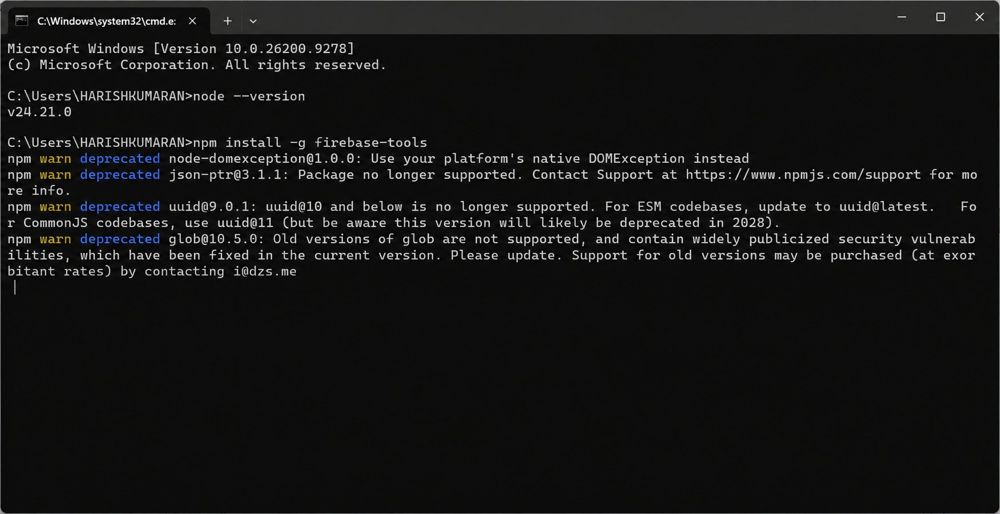
Figure 14.1 — Node version check and global install of firebase-tools
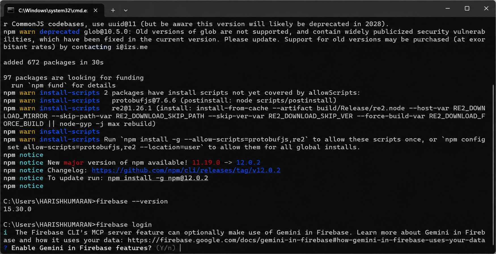
Figure 14.2 — Firebase CLI 15.30.0 and the start of firebase login
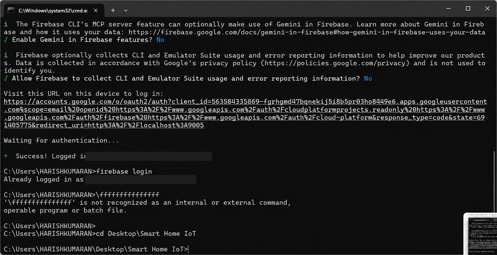
Figure 14.3 — Successful login (email hidden) and moving into the project folder
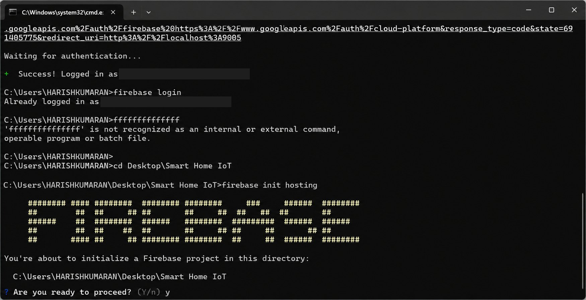
Figure 14.4 — firebase init hosting asks to confirm the directory
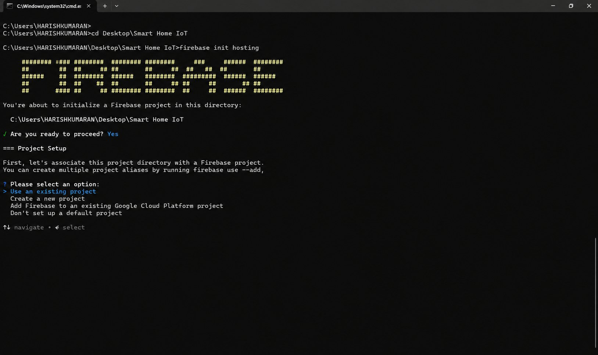
Figure 14.5 — Project setup options; "Use an existing project" is chosen
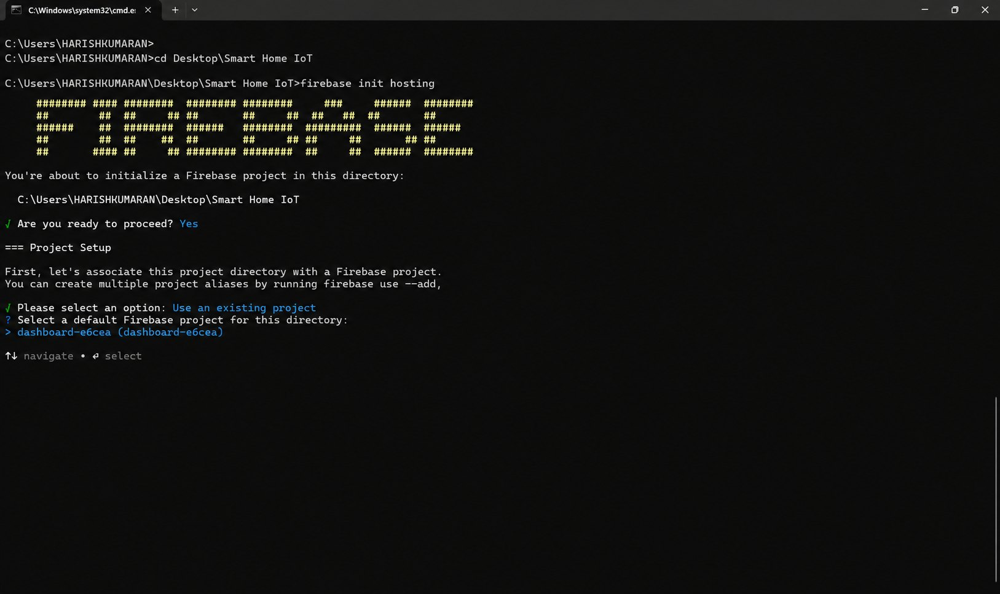
Figure 14.6 — The existing project dashboard-e6cea is selected as default
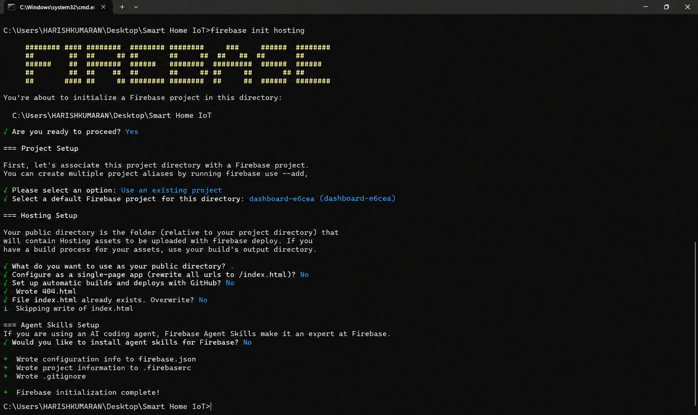
Figure 14.7 — Hosting configuration; firebase.json and .firebaserc are written
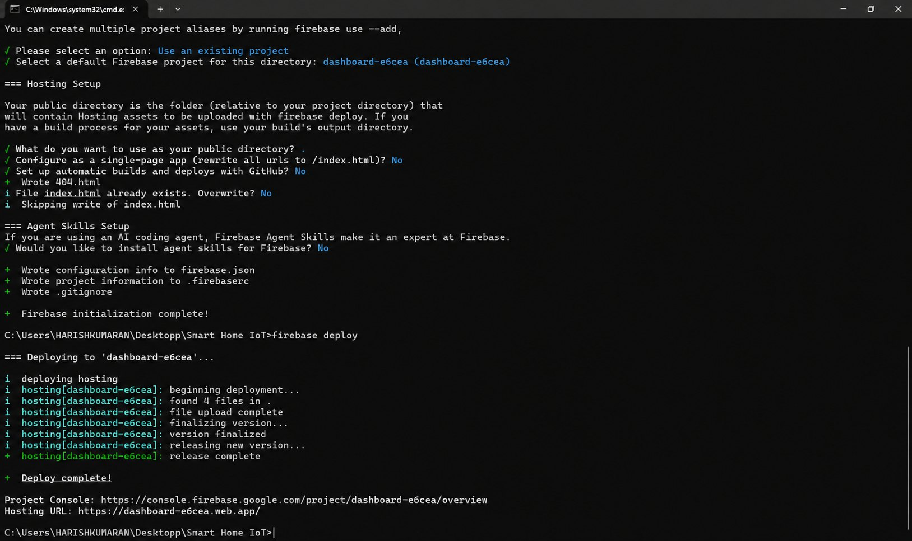
Figure 14.8 — firebase deploy completes and prints the Hosting URL
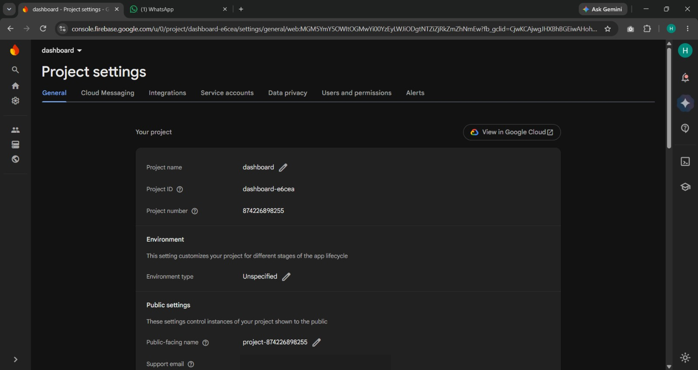
Figure 14.9 — Project settings: name dashboard, ID dashboard-e6cea (support email hidden)
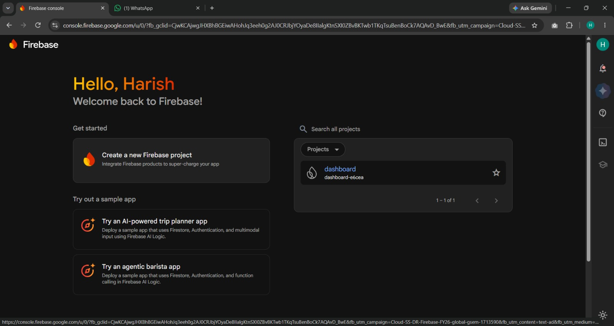
Figure 14.10 — Firebase Console home with the single project dashboard
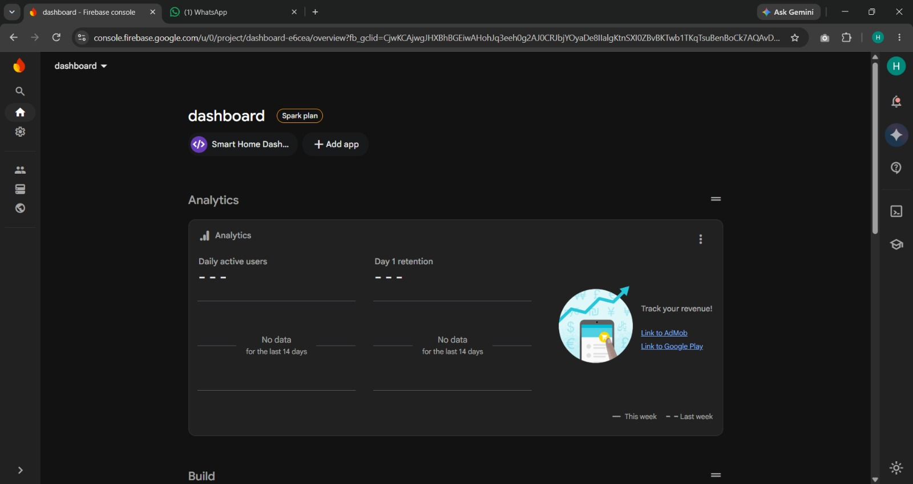
Figure 14.11 — Project overview: Spark plan and the registered web app
15. Firebase Authentication Configuration
The login workflow, as far as the available evidence shows:
- 1. Open the site: the user opens the hosted site and reaches the login page. Screenshot to add
- 2. Choose a provider: the user signs in with Email/Password or Google, the two providers enabled in Figure 15.1.
- 3. Validation: Firebase Authentication checks the credentials on Google's servers and either signs the user in or rejects the attempt. The project README records that invalid credentials were rejected during testing.
- 4. Access the dashboard: on success the dashboard opens and shows the signed-in user's name and a Sign Out button (Figure 21.1). The account also appears in the console user list (Figure 15.2).
- 5. Page guard: the earlier report text describes client-side authentication guards on the dashboard page. The guard code itself was not available, so it is not reproduced. To confirm
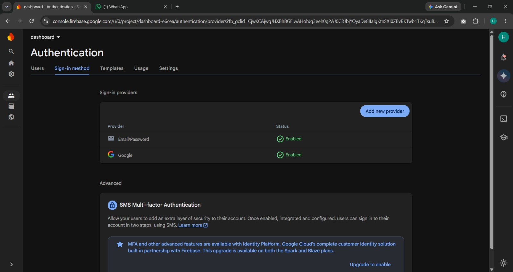
Figure 15.1 — Sign-in method tab: Email/Password and Google are both Enabled
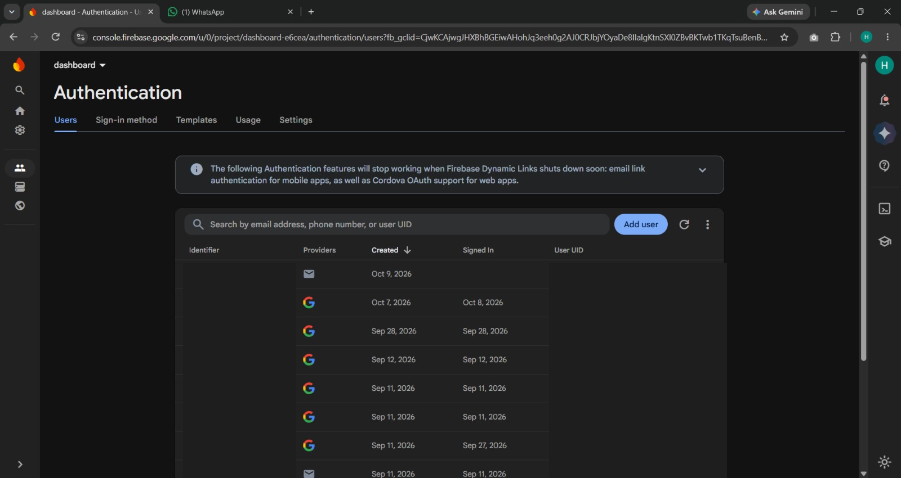
Figure 15.2 — Users tab: registered accounts with provider icons and dates (identifiers and user IDs hidden)
16. Realtime Database Structure
The Firebase Console (Figure 20.1) shows five top-level nodes. Only one child path, home/bulb/state, is confirmed from the dashboard screenshots. The other nodes were shown collapsed, so their children are marked as needing confirmation instead of being guessed.
{
"devices": { /* children not visible - CONFIRM */ },
"history": { /* children not visible - CONFIRM */ },
"home": {
"bulb": {
"state": "ON" | "OFF" // confirmed on the dashboard: home/bulb/state
}
/* any other children of home - CONFIRM */
},
"sensors": { /* children not visible - CONFIRM */ },
"settings": { /* children not visible - CONFIRM */ }
}| Node | Purpose | Status |
|---|---|---|
| home/bulb/state | Relay (bulb) state. The dashboard's ON / OFF buttons write "ON" or "OFF" here, and the card shows this value as STATUS. |
Verified |
| sensors | Name suggests the live sensor readings (DHT11, LDR) shown on the Live Telemetry page. Field names are not visible. | To confirm |
| history | Name suggests the logged records behind the Historical Telemetry table. Field names are not visible. | To confirm |
| devices | Name suggests device status. Contents are not visible. | To confirm |
| settings | Name suggests stored settings such as the mode or LDR threshold. Where those two values are actually stored is not visible. | To confirm |
17. Database and Data-Flow Architecture
The dashboard has no custom server. The browser talks directly to Firebase Authentication and Firebase Realtime Database, and the pages are delivered by Firebase Hosting. Figure 17.1 shows the login-to-data chain, Figure 17.2 the services of the Firebase project, and Figure 17.3 the direction of sensor updates and control commands.
Figure 17.1 — Login to data chain
User
Login Page
Authentication
Dashboard
Database
Data
Figure 17.2 — Firebase system architecture: browser, Hosting, Authentication and Realtime Database inside project dashboard-e6cea
Figure 17.3 — ESP32 → Firebase → dashboard data flow, and the control path back to the relay
18. Complete Existing Dashboard Source Code
The files below are shown exactly as they exist. Nothing was rewritten or "improved", and the real API key is redacted.
| File | Role | Status |
|---|---|---|
| firebase-dashboard.js | Firebase modular SDK v10 setup: imports, firebaseConfig, initializeApp and getDatabase. Reproduced below from the earlier report. |
Shown below |
| firebase.json | Hosting configuration written by firebase init hosting. Copied from the repository. |
Shown below |
| 404.html | Not-found page created by firebase init (Figure 14.7). |
In repository |
| index.html, dashboard.html | In the GitHub repository these are short skeleton pages (a basic login form and a basic readings page) with no Firebase scripts attached. They do not match the finished dashboard in Section 21. | To confirm |
| Login page, Live Telemetry page, Automation & Graphs page, CSS, JavaScript | The deployed interface seen in Section 21. Its source was not in the project files or repository available when this report was written, so it is not reproduced and the code below is not the complete dashboard. | To add |
firebase-dashboard.js
1import { initializeApp } from "https://www.gstatic.com/firebasejs/10.7.1/firebase-app.js";
2import { getDatabase, ref, onValue, set, get } from "https://www.gstatic.com/firebasejs/10.7.1/firebase-database.js";
3
4const firebaseConfig = {
5 apiKey: "YOUR_FIREBASE_API_KEY",
6 authDomain: "dashboard-e6cea.firebaseapp.com",
7 databaseURL: "https://dashboard-e6cea-default-rtdb.firebaseio.com",
8 projectId: "dashboard-e6cea",
9 storageBucket: "dashboard-e6cea.appspot.com"
10};
11
12const app = initializeApp(firebaseConfig);
13const db = getDatabase(app);firebase.json
{
"hosting": {
"public": ".",
"ignore": [
"firebase.json",
"**/.*",
"**/node_modules/**"
]
}
}19. Explanation of Important Code Sections
Explanation of the code that is available (Section 18). The listener, login and control code belongs to the missing dashboard source and is therefore not explained line by line.
ES Module Imports (lines 1–2)
Loads the Firebase App and Realtime Database modules from the gstatic CDN, version 10.7.1. initializeApp starts the SDK; getDatabase, ref, onValue, set and get are the database functions made available to the dashboard.
firebaseConfig (lines 4–10)
Holds the project identity: authDomain (used by Firebase Authentication), databaseURL (tells the SDK which Realtime Database to open), projectId and storageBucket. The apiKey is redacted.
initializeApp (line 12)
initializeApp(firebaseConfig) creates the Firebase app instance that connects this web page to project dashboard-e6cea.
getDatabase (line 13)
getDatabase(app) returns the database handle db. Other dashboard files attach to db with ref(), onValue() and set(), for example to write home/bulb/state.
firebase.json
Tells Firebase Hosting to publish the current folder ("public": ".") and to skip firebase.json, hidden files and node_modules when deploying.
Not available
Login handling, onValue() listeners, ON/OFF writes, mode and threshold logic, charts and CSV export are in the missing dashboard source. To add
20. Firebase Database Screenshots
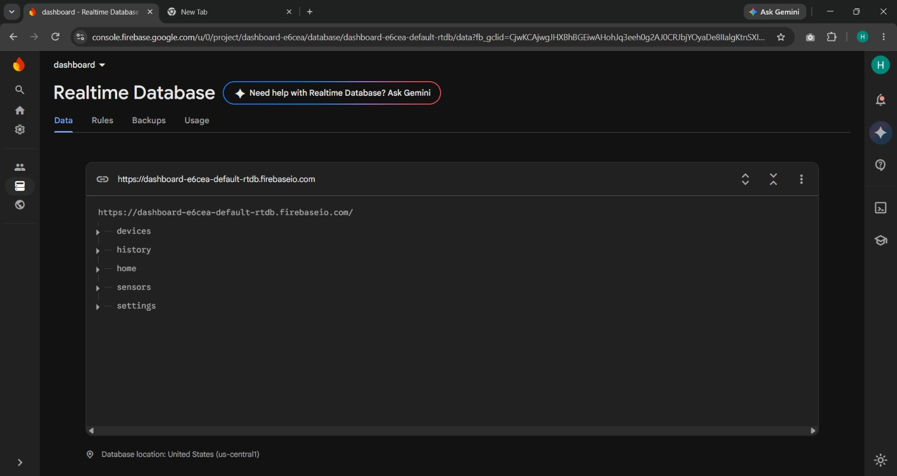
Figure 20.1 — Data tab for dashboard-e6cea-default-rtdb: top-level nodes devices, history, home, sensors, settings (all collapsed). Database location: us-central1
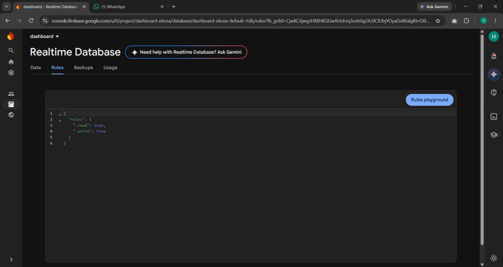
Figure 20.2 — Rules tab: .read and .write are both true, the current authorization setting discussed in Section 12
21. Working Dashboard Screenshots

Figure 21.1 — Live Telemetry page. Header: RTDB Connected, signed-in user, Sign Out. Relay card: Living Room Light, STATUS ON, node home/bulb/state, ON / OFF buttons, Manual Mode badge. Readings: 25.0 °C, 55 %, LDR raw 754 (0–1023)

Figure 21.2 — Automation & Graphs page: Automatic mode, LDR threshold 400, rule "LDR < Threshold → Bulb ON", Export CSV Telemetry and ESP32 Firmware Code buttons, start of the DHT11 and LDR chart panels
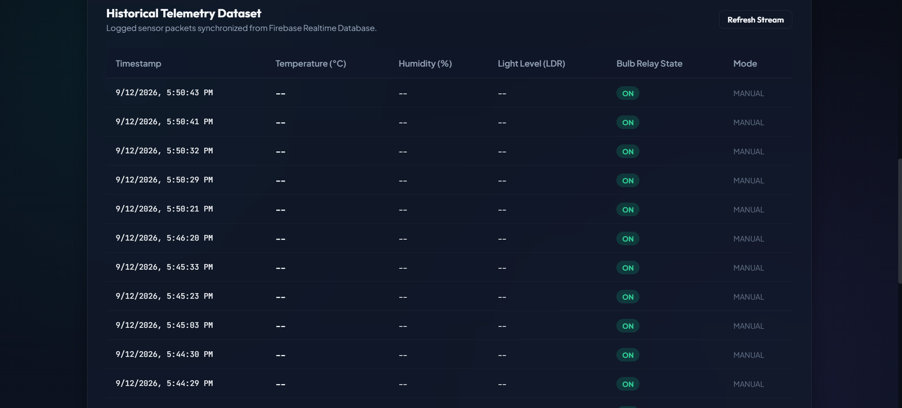
Figure 21.3 — Historical Telemetry Dataset table with Refresh Stream. Timestamps, relay state and mode (ON, MANUAL) are filled; the temperature, humidity and light columns show "--" in this capture
22. Testing and Output
Checks that are backed by a screenshot are marked Pass. Anything without evidence is marked as needing confirmation instead of being claimed:
firebase login
CLI login succeeded in the browser and the project folder was opened (Figure 14.3). Result: ✅ Pass
firebase deploy
Release complete; Hosting URL printed (Figure 14.8). Result: ✅ Pass
Email/Password and Google show Enabled, and registered users exist (Figures 15.1, 15.2). Result: ✅ Pass
The dashboard shows temperature, humidity and LDR values with RTDB Connected (Figure 21.1). Result: ✅ Pass
The relay card shows STATUS ON and the write path home/bulb/state. A recorded button press and the physical bulb response are not part of the evidence. To confirm
Automatic mode and threshold 400 are shown (Figure 21.2). The resulting switching is not captured in Task 04 evidence. To confirm
Rows with timestamp, relay state and mode are listed (Figure 21.3); the sensor columns show "--" in that capture. Result: ✅ Pass for logging of relay events; sensor columns To confirm
The Export CSV Telemetry button exists (Figure 21.2); the downloaded file is not shown. To add
The project README records that invalid credentials were rejected; there is no screenshot. To add
Rules are .read: true / .write: true (Figure 20.2). Finding: unrestricted access; recommendation in Section 12.
Observed dashboard output
Values visible in Figure 21.1 and Figure 21.2:
Humidity : 55 % (badge: Optimal)
LDR raw : 754 (0–1023, badge: Daylight)
Relay : STATUS ON (home/bulb/state)
Mode : Manual (Fig. 22.1) · Automatic, threshold 400 (Fig. 22.2)
23. Problems Encountered and Solutions
Only problems recorded in the project files are listed:
Problem: Data Not Ready on First Load
The dashboard occasionally drew itself before Firebase data arrived, so cards looked empty or wrong.
Solution: a placeholder (--) is shown until the first data snapshot is received. (Source: repository README)
Problem: Firebase v9+ Modular Syntax
Older Firebase tutorials use a different import style from the modular SDK.
Solution: the imports were adjusted to the modular style (initializeApp, getDatabase, ref, onValue, set, get). (Source: repository README)
Open Item: README Does Not Match the Deployment
The README points to env-monitor-845af.web.app and different node names than the deployed project.
Next step: update the README to dashboard-e6cea and the real nodes (Section 18). (Found while preparing this report)
Open Item: Open Database Rules
The rules allow everyone to read and write (Figure 20.2).
Next step: restrict access to signed-in users as suggested in Section 12, and let the ESP32 sign in as well.
Other Issues
Firebase configuration, login failures, wrong paths and hosting problems are not recorded in the available files. To add if any occurred.
24. Learning Reflection
Before this task I thought of a dashboard as just a web page. Building this one showed me that the page is only the front, and the real work happens in the cloud. I did not have to write or run my own server, which is the Backend-as-a-Service idea from Section 6.
Cloud Computing
I learned that the cloud is a shared place both the device and the browser can reach, so the ESP32 does not need its own public web server.
Firebase Services
Authentication, Realtime Database and Hosting each solve one part of the problem, and I only had to configure them instead of building them.
Real-Time Database Communication
The database is a JSON tree and a page can listen to a path, so a value changes on screen without a refresh. The RTDB Connected badge and the ON/OFF buttons writing home/bulb/state made this easy to see.
Authentication and Authorization
My login stops people from using the dashboard page, but my database rules are still open for reading and writing, so the data itself is not protected yet. Fixing that is the first thing I would do next.
Dashboard Development
Gauges, status badges, a threshold slider, charts and a history table all come from the same database values, and small habits like showing -- until data arrives matter.
Connecting a Web App to Cloud Data
A small firebaseConfig object links the page to the project. I kept the API key out of what I share and documented the real database structure instead of an imagined one.
25. Conclusion
This task set up the cloud side of the AuraIoT system on Firebase project dashboard-e6cea. Firebase Authentication with Email/Password and Google sign-in is enabled, a Realtime Database holds the data (devices, history, home, sensors, settings), and the dashboard is deployed on Firebase Hosting.
The dashboard screenshots show live DHT11 and LDR readings, a bulb relay card that writes home/bulb/state, Manual and Automatic modes with a threshold, charts, a historical telemetry table and CSV export. Firebase takes the place of a custom server, so the browser and the ESP32 only need to talk to the database.
Several items still need evidence or action: the login page screenshot, the demo video, the full dashboard source code, expanded database nodes, and tightening the open database rules. They are marked in the sections above.
✅ The Firebase project, Authentication, Realtime Database and Hosting were set up and the dashboard was deployed. Open items: add the missing evidence and replace the open .read / .write rules with sign-in based rules.
26. References
Documentation and resources consulted during implementation:
- Google Firebase. Realtime Database Documentation. Google LLC. firebase.google.com
- Google Firebase. Firebase Authentication Documentation. Google LLC. firebase.google.com
- Google Firebase. Firebase Hosting Documentation. Google LLC. firebase.google.com
- Google Firebase. Realtime Database Security Rules. Google LLC. firebase.google.com
- Google Firebase. Firebase CLI Reference. Google LLC. firebase.google.com
- NIST. The NIST Definition of Cloud Computing (SP 800-145). National Institute of Standards and Technology, 2011. csrc.nist.gov
- Project files. Repository README and Firebase Console screenshots for project
dashboard-e6cea.
27. Live AuraIoT Dashboard
Experience the live production dashboard deployed on Google Firebase Hosting with realtime environmental telemetry and relay control toggles:
Open Live AuraIoT Dashboard →URL: https://dashboard-e6cea.web.app/automation